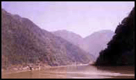
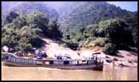
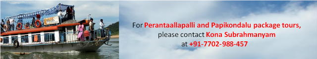

|
 |
|
|
 |
 |
 |
 |
|
Nature
and its Beauty |
| The scenic beauty of "Paapikondalu" and "Perantalapalli" a
village in the vicinity of "Paapikondalu" cannot be explained
by mere words and better be visited. The mighty river Godavari
narrows down and passes through a stretch of hills (Paapikondalu)
and the resultant picturesque is a visitor's delight. |
| Location and Route: |
| This
hill place is located on Bhadrachalam-Rajahamandry waterway
at a stretch of nearly 3 Kilometers all along the pleasure
trip on either side of the holy river Godavari. One needs
to reach Kunavaram(the location where river Sabari merges
into Godavari) by road from Bhadrachalam town which is about
50 KMs and then take a Motor Launch to Rajahmandry on the
river Godavari. The traveling distance by motor launch from
Kunavaram is about 4 and half hours. |
|
| |
| Visiting
Places: |
Sri
Rama Giri in VR Puram mandal is situated on the bank in the
down stream of the river Godavari (about 55 Kms from Bhadrachalam).
The deity Yogarama temple is on a hill place and the place
is named after Sri Rama Giri.
Brief History: According to mythological story, an ardant
devotee, Sabari, gave shelter to Sri Sita Rama Laxmanulu while
they were on the way in Dhandakaranya during Vanavaasa period
and offered fruits to Rama after tasting them out of affection
towards Rama. Bhakta Sabari who had spent her old age by chanting
Rama nama in Dhandakaranya attained salvation after having
Darshan of Rama whom she loved fervently and later dissolved
as a rivulet which merged into the holy river Godavari near
Kunavaram. |
 |
|
| |
|  |
Perantalapalli
: |
| (A Tourism Spot)
is a remote tribal village in Velerupadu mandal of Khammam
District. This village is located on Kunavaram-Rajahmundry
water way. A "Sri Krishna Munivaatam" was constructed at this
village by Balananda Swamiji in the year 1927.Now this Munivatam
is being maintained by a tribal sect Konda Reddys and daily
pooja are being performed by them. Beautiful sceneries of
Papi Hills and waterfalls at Munivaatam and the peaceful atmosphere
at this tribal village will definitely give pleasant look
and peace to the visitors. The idol of Shiva under serpent
shade was installed in Munivaatam. |
| Brief
History: |
| The history depicts that on one day Balananda Swamy (during
1926) had reached Perantalapalli village while traveling from
Rajahmundry to Bhadrachalam on river Godavari in a motor launch
and stayed that night .He was enraptured with the pleasant
atmosphere and the sceneries at and around the place where
he stayed on moon lit night and he came out of the launch
to the sand bed on the bank. Then a lady appeared to him and
asked him to follow her and disappeared after reaching a place
on the river bank covered with shrubs and stream flows. He
spent that night there and astonished after seeing Shiva idol
under serpent shade in the early morning and decided to construct
a mantapam there. That mantapam is named as Sri Krishna Munivaatam.
No priests would perform pooja there. The devotees themselves
pray the God and perform pooja after having holy dip in river
Godavari. Using of non-vegetarian and hunting of animals are
strictly prohibited there. All the devotees must maintain
silence while spending time there and also performing pooja
in this munivaatam. Balananda Swamy after seeing the backwardness
of the tribal sect Konda Koyas (Hill Reddys) decided to reform
them and took up a project in the line by bringing them to
cultured society. Later in 1969, one David Adam, a youngster
and a resident of England became a disciple of swamiji and
spent in this munivaatam till recently. Now this munivatam
is being maintained by the tribals themselves. |
|
 |
|
|
 |
 |
 |
 |
|
| Copyright © 2000-2017 Team Bhadrachalarama.Org All Rights Reserved |
|
|